Qui visite la Google Merchandise Store, quand, sur quel appareil, et où la boutique perd-elle ses acheteurs ? Analyse de 18 101 sessions GA4, de novembre 2020 à janvier 2021.
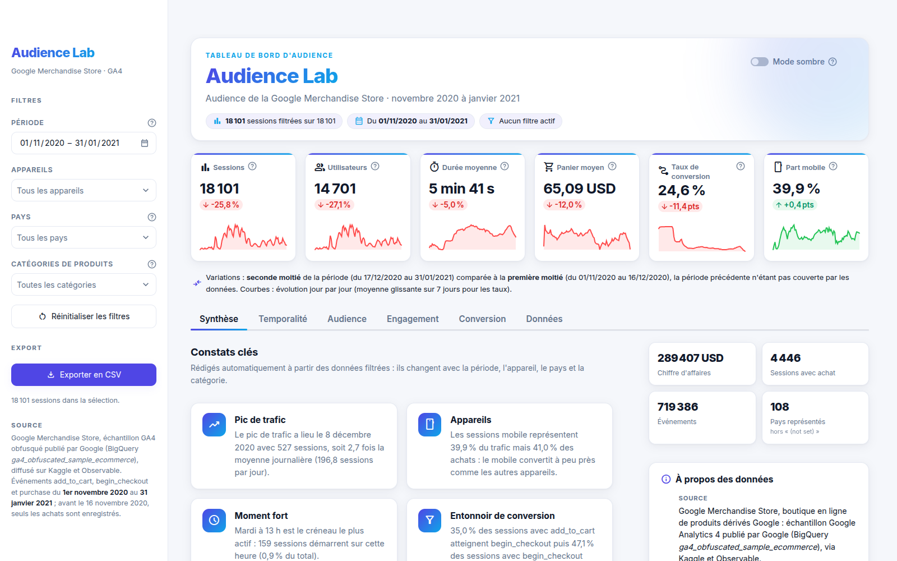
desktop, mobile, tablet, add_to_cart, begin_checkout, purchase, Apparel, noms de pays en anglais) ; tout le reste est en français. Les montants sont en dollars américains (USD). Sauf mention contraire, les chiffres portent sur la période complète (1er novembre 2020 au 31 janvier 2021) et proviennent du notebook notebooks/01_preparation_donnees.ipynb, exécuté de bout en bout ; l’application affiche les mêmes valeurs.
Ce projet traite le trafic d’une boutique en ligne réelle, la Google Merchandise Store, comme l’audience d’un média. À partir de 758 884 événements bruts issus de Google Analytics 4, nous avons reconstitué 18 101 sessions, calculé les indicateurs clés et construit un tableau de bord interactif, Audience Lab, qui permet d’explorer cette audience par période, appareil, pays et catégorie de produit.
Après un pic isolé les 17 et 18 novembre (287 et 229 sessions), au lendemain du démarrage de la collecte des ajouts au panier, la hausse durable commence le 24 novembre. Le trafic culmine dans la première quinzaine de décembre : record le 8 décembre 2020 avec 527 sessions. Le jour de Noël ne compte que 87 sessions.
Le mardi (3 180 sessions) attire 1,9 fois plus de visites que le dimanche (1 673) ; le week-end ne pèse que 20,0 % des sessions. L’heure, en revanche, discrimine très peu (681 à 789 sessions selon l’heure).
Le mobile représente 39,9 % du trafic et 41,0 % des achats. Les taux de conversion sont presque identiques (24,1 % desktop, 25,2 % mobile, 23,9 % tablet), de même que les durées médianes.
Seules 35,0 % des sessions avec ajout au panier commencent un paiement, puis 47,1 % des paiements commencés aboutissent. Apparel porte 54,3 % du chiffre d’affaires.
Livrables : notebook de préparation (notebooks/01_preparation_donnees.ipynb), application Streamlit (app.py, en ligne à l’adresse https://audience-lab.streamlit.app), présent rapport et dépôt github.com/Abdazz/audience-lab.
Le sujet demande de concevoir une plateforme d’analyse et de visualisation de l’audience d’un service en ligne : nettoyer des données de fréquentation, en extraire des indicateurs, les représenter avec Seaborn et Plotly Express, puis les intégrer dans un tableau de bord Streamlit déployé.
Le sujet autorise les médias en ligne, l’e-commerce, les réseaux sociaux ou les services publics. Nous avons retenu l’e-commerce, avec un jeu de données de mesure d’audience réel : celui de la Google Merchandise Store, collecté par Google Analytics 4, l’outil de référence de la mesure d’audience web. Une session y joue le rôle d’une visite, l’appareil celui du support de consultation, et l’entonnoir d’achat celui de la fidélisation d’un lectorat : on mesure combien de visiteurs vont au bout de leur parcours.
| Question | Ce que l’on mesure | Onglet de l’application |
|---|---|---|
| Quand les visiteurs viennent-ils ? | Saisonnalité (jour, semaine), jours et heures de pointe | Temporalité |
| D’où et sur quel appareil ? | Parts par appareil, par pays et par catégorie de produit | Audience |
| À quel point s’engagent-ils ? | Durée de session, nombre d’actions, valeur ajoutée au panier | Engagement |
| Où les perd-on ? | Entonnoir add_to_cart, begin_checkout, purchase | Conversion |
La chaîne de traitement suit les quatre étapes du cahier des charges. Chaque maillon produit un artefact versionné dans le dépôt, ce qui rend l’ensemble reproductible.
data/raw/), téléchargeables par scriptPython 3.12 ; pandas 3.0.6 et pyarrow 26.0.0 pour la préparation ; seaborn 0.13.2 et matplotlib 3.11.2 pour les figures statiques ; Plotly 7.1.0 et Streamlit 1.66.0 pour l’application ; pycountry pour les noms de pays ; pytest pour les tests automatisés (99 tests). Les versions sont figées dans requirements.txt.
La section 2 présente le jeu de données et la section 3 la démarche de nettoyage, chiffrée étape par étape. La section 4 donne les indicateurs clés, la section 5 interprète chacun des graphiques imposés par le sujet, et la section 6 décrit le tableau de bord. Les sections 7 et 8 tirent les conclusions business, puis techniques, avec les limites de l’étude. Les annexes indiquent comment tout réexécuter et où trouver chaque exigence du sujet.
Les données proviennent de la Google Merchandise Store, la boutique officielle de produits dérivés Google (vêtements, sacs, papeterie, accessoires). Elles décrivent trois mois d’événements e-commerce, couvrant le Black Friday, les fêtes de fin d’année et le creux de janvier.
| Origine | Sous-ensemble du jeu public BigQuery ga4_obfuscated_sample_ecommerce, publié par Google comme jeu de démonstration de Google Analytics 4. |
| Diffusion utilisée | Observable (@observablehq/google-merchandise-sales-data), reprise sur Kaggle (mexwell/google-merchandise-sales-data). Les fichiers sont récupérés par scripts/telecharger_donnees.py, qui contrôle l’en-tête et le nombre de lignes de chacun. |
| Licence et usage | Kaggle indique une licence « Other » renvoyant à la source Observable. Il s’agit d’un jeu de démonstration diffusé publiquement par Google, utilisé ici à des fins pédagogiques non commerciales, source citée. Les identifiants sont obfusqués par Google : aucune donnée personnelle. |
| Période | Du 1er novembre 2020 (00:27:14) au 31 janvier 2021 (23:59:08), soit 92 jours. |
Le jeu se compose de trois tables reliées par des identifiants. La table des événements est le cœur de l’analyse ; le catalogue l’enrichit des prix et des catégories ; la table des utilisateurs complète l’inventaire.
| Fichier | Lignes | Colonnes | Contenu | Clé |
|---|---|---|---|---|
events.csv | 758 884 | 7 | un événement e-commerce par ligne : ajout au panier, début de paiement ou achat | user_id + ga_session_id |
items.csv | 1 381 | 6 | catalogue : nom, marque, variante, catégorie (21 valeurs), prix de 1 à 313 USD | id |
users.csv | 270 154 | 3 | valeur vie client (ltv) et date de première visite | id |
| Variable | Nature | Description et modalités |
|---|---|---|
date devenue timestamp | temporelle | horodatage à la seconde de l’événement, stocké en texte dans le fichier brut |
device | catégorielle | desktop (441 521 événements bruts), mobile (300 628), tablet (16 735) |
type | catégorielle | add_to_cart (667 282), begin_checkout (76 047), purchase (15 555) |
country | catégorielle | code pays ISO à deux lettres : 108 pays, plus 4 555 valeurs manquantes |
item_category, item_brand | catégorielle | 21 catégories (Apparel, Bags, Office...) et 5 marques, après jointure du catalogue |
price_in_usd, ltv | numérique | prix unitaire de l’article (USD) ; valeur vie client (positive pour 4 445 utilisateurs, soit 1,6 %) |
duration_s, n_events, n_items | numérique dérivée | durée de session (secondes), nombre d’événements, nombre d’articles distincts |
cart_value_usd, revenue_usd | numérique dérivée | valeur ajoutée au panier et chiffre d’affaires de la session (somme des prix des add_to_cart, puis des purchase) |
| Critère du sujet (section 1.1) | Variables qui le satisfont | Statut |
|---|---|---|
| Au moins 1 variable temporelle | horodatage à la seconde, d’où sont dérivés le jour, l’heure, le jour de la semaine et le mois | ✓ |
| Au moins 2 variables numériques | prix, ltv, durée de session, nombre d’événements, valeur du panier, chiffre d’affaires | ✓ |
| Au moins 2 variables catégorielles | appareil, type d’événement, pays, catégorie et marque de l’article | ✓ |
Au-delà de ces critères, quatre raisons ont motivé ce choix :
Le notebook notebooks/01_preparation_donnees.ipynb part des trois fichiers bruts et documente chaque décision dans une cellule de texte. Le principe directeur : ne rien supprimer sans preuve que la ligne est fausse, et chiffrer l’effet de chaque étape.
| # | Étape | Avant | Après | Décision |
|---|---|---|---|---|
| 1 | Lecture et inspection | 758 884 | 758 884 | info(), describe(), cardinalités ; lecture avec keep_default_na=False pour que le code NA (Namibie) ne devienne pas une valeur manquante |
| 2 | Valeurs manquantes de country | 4 555 manquants | 0 manquant | remplacées par (not set), convention de Google Analytics ; aucune ligne supprimée |
| 3 | Doublons exacts | 758 884 | 719 386 | 39 498 lignes (5,20 %) identiques sur les sept colonnes supprimées |
| 4 | Conversion des dates | texte | datetime64 | pd.to_datetime avec format explicite ; indexation par set_index et agrégation par resample |
| 5 | Jointure du catalogue et des pays | 719 386 | 719 386 | jointure à gauche validée many_to_one, 0 article sans correspondance ; codes ISO-3 et noms par pycountry |
| 6 | Variables dérivées | 7 colonnes | 18 colonnes | jour, heure, jour de la semaine (0 = lundi), mois, clé de session |
| 7 | Agrégation en sessions | 719 386 évén. | 18 101 sessions | une ligne par session, 22 variables, 14 701 utilisateurs |
| 8 | Valeurs aberrantes (IQR) | 18 101 | 18 101 | 3 000 sessions (16,6 %) signalées par deux indicateurs booléens, toutes conservées |
| 9 | Export Parquet | 41,7 Mo | 4,8 Mo | events_clean.parquet (3,9 Mo) et sessions.parquet (0,9 Mo), types conservés |
Effectifs en lignes d’événements, sauf mention contraire. La taille « avant » de l’étape 9 est celle de events.csv et items.csv.
Seule la colonne country présente des manquants : 4 555 événements, soit 0,6 %. Ils forment 136 sessions entièrement sans pays et aucune session partiellement renseignée : il s’agit d’un échec de géolocalisation de la visite, pas d’une erreur de saisie isolée. Supprimer ces lignes ferait perdre 136 sessions réelles, avec leurs achats ; imputer le pays le plus fréquent (US) inventerait une information et fausserait la carte. La modalité (not set), que Google Analytics emploie lui-même, reste visible et filtrable. Dans le catalogue, la colonne variant compte 408 manquants, mais elle n’est pas utilisée.
Un doublon exact est identique sur les sept colonnes, horodatage à la seconde compris. Les 39 498 doublons concernent à 94,8 % l’événement begin_checkout (37 443 lignes), signe d’envois répétés du marqueur lors d’un rechargement de la page de paiement. Les conserver gonflerait les volumes et, pour purchase (844 doublons), compterait deux fois le même chiffre d’affaires. Limite assumée : deux ajouts réellement distincts du même article dans la même seconde seraient indiscernables.
La colonne date contient en réalité un horodatage, converti en timestamp ; on en dérive le jour, l’heure, le jour de la semaine et le mois (étape 1.3 du sujet). Le catalogue est joint sans perte ni duplication, et pycountry ajoute le code ISO-3 (pour la carte) et le nom anglais du pays ; le Kosovo (XK), absent de la norme, est complété à la main. Enfin, comme ga_session_id n’est unique qu’au sein d’un utilisateur (18 034 valeurs pour 18 101 sessions), la clé de session combine user_id et ga_session_id. La table des sessions agrège début, fin, durée, nombre d’événements et d’articles, valeur du panier, chiffre d’affaires et indicateurs d’étape. Des contrôles automatiques vérifient sa cohérence avec la table des événements : unicité de la clé, somme des événements, chiffre d’affaires, durées positives ou nulles, un seul appareil et un seul pays par session.
La règle de Tukey (valeur au-dessus de Q3 + 1,5 × IQR) est appliquée aux deux mesures d’engagement, sur l’ensemble des sessions. La borne basse, négative ou nulle, est sans objet.
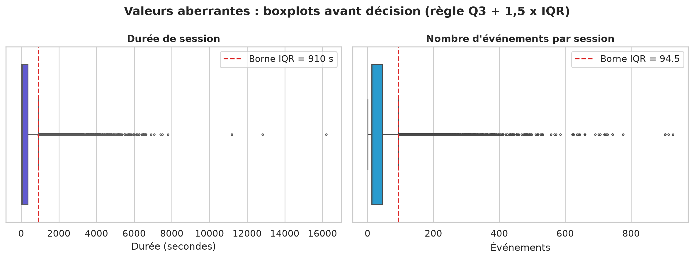
Les boxplots montrent une queue continue, pas quelques points isolés : ce sont de vrais comportements (grosses commandes, onglet resté ouvert). Surtout, ces sessions convertissent à 47,1 % contre 20,1 % pour les sessions typiques, ajoutent en moyenne 3 074 USD au panier contre 514 USD et apportent 42,4 % du chiffre d’affaires (122 823 USD). Les supprimer fausserait tous les indicateurs business. Elles sont donc signalées par is_outlier_duration et is_outlier_events, et les graphiques de distribution passent en échelle logarithmique plutôt que de les couper.
Les indicateurs sont calculés sur toutes les sessions, y compris celles signalées comme aberrantes. Ce sont les six cartes du bandeau de l’application, avec le même arrondi (valeur exacte en petit sous chaque taux), ici sur la période complète et sans filtre.
| Indicateur | Valeur |
|---|---|
| Chiffre d’affaires total | 289 407 USD |
| Chiffre d’affaires par session | 15,99 USD |
| Part des sessions atteignant le paiement | 40,37 % |
| Événements par session (moyenne / médiane) | 39,74 / 16 |
| Valeur ajoutée au panier par session | 938,63 USD |
| Part de la valeur du panier achetée | 1,7 % |
| Pays | Sessions | Part |
|---|---|---|
| United States | 7 993 | 44,2 % |
| India | 1 667 | 9,2 % |
| Canada | 1 408 | 7,8 % |
| United Kingdom | 554 | 3,1 % |
| France | 356 | 2,0 % |
Top 10 (sur 108 pays et (not set)) | 13 470 | 74,4 % |
| Appareil | Sessions | Part du trafic | Conversion | Durée médiane | Chiffre d’affaires | Part du CA |
|---|---|---|---|---|---|---|
desktop | 10 489 | 57,9 % | 24,1 % | 64 s | 167 178 USD | 57,8 % |
mobile | 7 231 | 39,9 % | 25,2 % | 69 s | 116 474 USD | 40,2 % |
tablet | 381 | 2,1 % | 23,9 % | 69 s | 5 755 USD | 2,0 % |
| Ensemble | 18 101 | 100 % | 24,56 % | 66 s | 289 407 USD | 100 % |
Le panier moyen (65,09 USD) est le montant moyen d’une session avec achat : c’est l’indicateur retenu dans le bandeau. La valeur ajoutée au panier (938,63 USD par session) additionne les prix de tous les add_to_cart, même si un article est ajouté plusieurs fois et jamais acheté : seuls 1,7 % de cette valeur sont finalement achetés. Elle mesure l’intérêt, pas la dépense. De même, la durée médiane (66 s) décrit mieux la session typique que la moyenne (341,48 s), tirée par une longue traîne.
Part du chiffre d’affaires par appareil et total du top 10 : calcul complémentaire sur data/processed/ ; autres valeurs : notebook, section 9.
Chaque visualisation imposée par le sujet a sa version statique Seaborn dans le notebook (reproduite ici à 200 dpi) et sa version interactive Plotly Express dans l’application, où elle réagit aux filtres. Les quatre premières sous-sections suivent l’ordre du sujet ; la dernière ajoute deux analyses utiles à la décision.
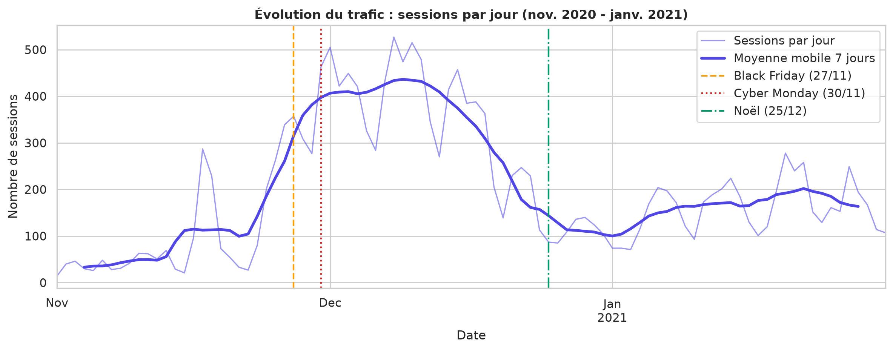
resample("D") sur le début de session. Dans l’application : px.line, granularité jour ou semaine, détail par appareil. Source : notebook, section 10.1.Lecture. Du 1er au 15 novembre, le trafic est faible (40 sessions par jour en moyenne). Un premier pic apparaît les 17 et 18 novembre (287 puis 229 sessions), au lendemain du 16 novembre, date à laquelle les ajouts au panier commencent à être collectés : il retombe dès le 19 (73 sessions) et ne marque donc pas encore la saison. La hausse durable commence le 24 novembre (201 sessions, contre 80 la veille et 27 le 22), juste avant le Black Friday, puis le trafic reste au-dessus de 400 sessions par jour en moyenne mobile pendant la première quinzaine de décembre : la semaine du 7 décembre totalise 3 041 sessions. Le Black Friday et le Cyber Monday lancent la saison, mais le pic est la période des commandes de Noël, avant les dates limites de livraison. Le trafic s’effondre ensuite (87 sessions le 25 décembre) puis reprend modérément en janvier.
Interprétation. La boutique fonctionne comme un média saisonnier : décembre réunit 51,9 % des sessions et 45,4 % du chiffre d’affaires. Le début de novembre reflète aussi la collecte (avant le 16 novembre, seuls les achats sont enregistrés, voir section 8) : la comparaison novembre-décembre surestime donc un peu l’écart, sans en changer le sens.
| Mois | Sessions | Part des sessions | Sessions par jour | Chiffre d’affaires | Part du CA |
|---|---|---|---|---|---|
| Novembre 2020 | 3 688 | 20,4 % | 122,9 | 107 142 USD | 37,0 % |
| Décembre 2020 | 9 403 | 51,9 % | 303,3 | 131 454 USD | 45,4 % |
| Janvier 2021 | 5 010 | 27,7 % | 161,6 | 50 811 USD | 17,6 % |
Sessions et chiffre d’affaires par mois : calcul complémentaire sur data/processed/sessions.parquet ; sessions par jour : notebook, section 10.1.
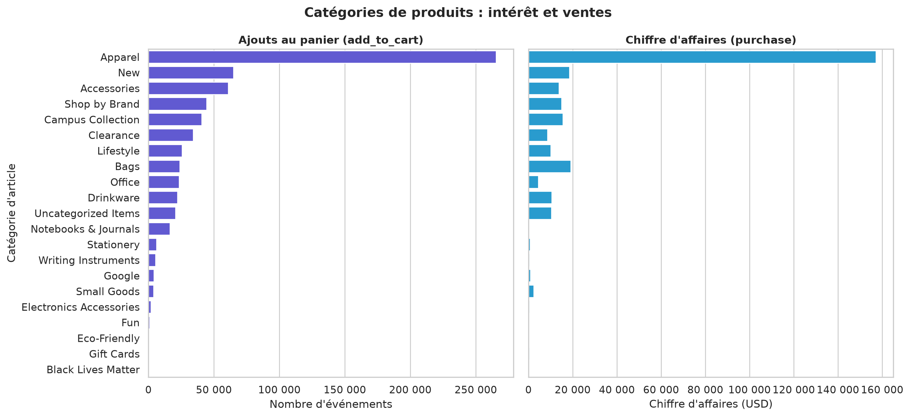
sns.barplot, catégories triées par volume d’événements. Dans l’application : px.bar avec choix de la mesure, et px.pie en anneau pour les parts par appareil. Source : notebook, section 10.2.| Catégorie | Ajouts au panier | Achats | Chiffre d’affaires | Part du CA | Achats pour 100 ajouts | Prix moyen d’achat |
|---|---|---|---|---|---|---|
Apparel | 265 434 | 4 858 | 157 235 USD | 54,3 % | 1,83 | 32,37 USD |
Bags | 23 851 | 671 | 19 137 USD | 6,6 % | 2,81 | 28,52 USD |
New | 65 046 | 1 397 | 18 506 USD | 6,4 % | 2,15 | 13,25 USD |
Office | 23 343 | 798 | 4 501 USD | 1,6 % | 3,42 | 5,64 USD |
Notebooks & Journals | 16 514 | 36 | 246 USD | 0,1 % | 0,22 | 6,83 USD |
Lecture. Apparel écrase toutes les autres catégories : 39,3 % des événements, 265 434 ajouts au panier et 54,3 % du chiffre d’affaires. Les trois premières catégories réunissent 58,8 % des ajouts au panier.
Interprétation. L’intérêt ne se traduit pas toujours en ventes. Bags n’est que 8e en ajouts au panier mais 2e en chiffre d’affaires : ce n’est pas un effet de prix (28,52 USD par achat contre 32,37 USD pour Apparel), mais une meilleure transformation, avec 2,81 achats pour 100 ajouts contre 1,83. À l’inverse, Notebooks & Journals cumule 16 514 ajouts pour 36 achats seulement (0,22 pour 100) : une catégorie très regardée, presque jamais achetée, qui mérite un audit. Les catégories marginales (Fun, Eco-Friendly, Gift Cards, Black Lives Matter) pèsent moins de 1 % des événements.
Pays. L’audience est d’abord américaine : 44,2 % des sessions viennent des États-Unis, 61,1 % des trois premiers pays (avec l’Inde et le Canada) et 74,4 % du top 10. La conversion y est comparable (24,2 % aux États-Unis, 24,9 % en Inde, 25,4 % au Canada) : la carte choroplèthe de l’application (px.choropleth) montre donc surtout où se trouve le volume, pas un écart de qualité entre marchés.
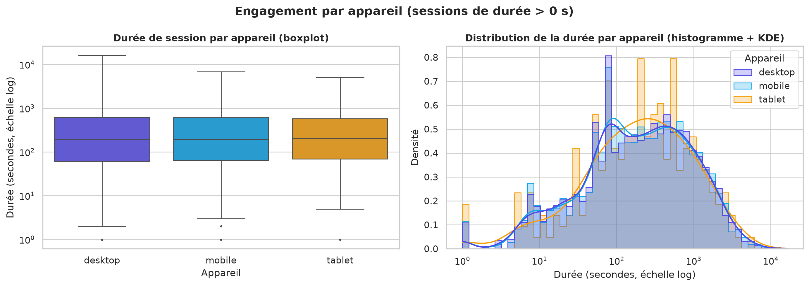
sns.boxplot, à droite sns.histplot(kde=True) avec une aire normalisée par appareil. Les sessions de durée nulle sont exclues de ces deux graphiques seulement. Dans l’application : px.box et px.histogram, pour la durée, le nombre d’actions ou la valeur du panier. Source : notebook, section 10.3.Lecture. Les trois boîtes sont presque superposées et les densités ont la même forme. La seule différence visible est l’extrémité de la queue, plus longue sur desktop. L’histogramme de la tablette est plus irrégulier car il ne repose que sur 254 sessions de durée positive.
Interprétation. La densité est bimodale : un premier mode vers 80 s correspond à des visites éclairs (un ou deux ajouts au panier), un second, plus large, entre 200 et 1 000 s, à des sessions de composition de panier. Ces deux usages existent sur chaque appareil dans les mêmes proportions : l’appareil ne différencie pas l’engagement dans ce jeu. La densité de la valeur du panier le confirme, avec un panier médian identique de 382 USD sur les trois appareils (valeur qui reflète l’artefact d’obfuscation décrit en section 8).
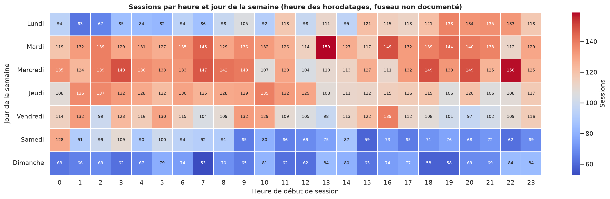
sns.heatmap(annot=True, cmap="Blues") : palette séquentielle à une seule teinte, adaptée à des effectifs. Grille complète de 7 × 24 cases. Dans l’application : px.imshow. Source : notebook, section 10.4.Lecture. Les lignes du samedi et du dimanche sont les plus claires à presque toutes les heures, tandis que celles du mardi et du mercredi (3 180 et 3 150 sessions) sont les plus foncées. Les colonnes, elles, se ressemblent : aucun creux nocturne ne se dessine.
Interprétation. Le jour de la semaine structure le trafic, l’heure presque pas. Le profil de semaine est compatible avec des achats faits depuis le bureau ou pour l’entreprise. L’absence de cycle jour et nuit est en revanche surprenante pour une audience à 44 % américaine : elle peut venir de la diversité des fuseaux des visiteurs ou de l’obfuscation des horodatages, d’autant que le fuseau des données n’est pas documenté. Les conclusions horaires se lisent donc comme des tendances relatives, et les recommandations portent sur le jour plutôt que sur l’heure.
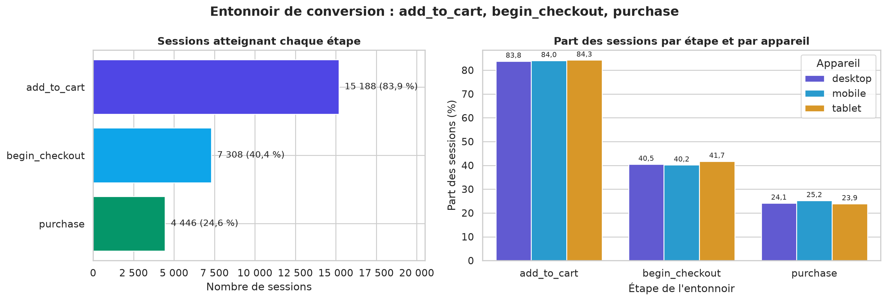
px.funnel empilé par appareil. Source : notebook, section 10.6.Lecture. 15 188 sessions (83,9 %) contiennent un ajout au panier, 7 308 (40,4 %) un début de paiement et 4 446 (24,6 %) un achat, avec des parts quasi identiques sur les trois appareils. L’entonnoir n’est cependant pas un chemin strict : 2 913 sessions n’ont aucun add_to_cart, dont 1 993 qui commencent pourtant un paiement, et 1 006 sessions achètent sans begin_checkout. Le rapport des effectifs d’une étape à l’autre n’est donc pas une probabilité de passage ; on calcule des taux conditionnels sur les mêmes sessions.
| Passage | Taux conditionnel |
|---|---|
add_to_cart vers begin_checkout | 35,0 % |
begin_checkout vers purchase | 47,1 % |
add_to_cart vers purchase | 16,9 % |
Interprétation. La plus grosse perte se situe entre le panier et le paiement : 65,0 % des sessions avec ajout au panier s’arrêtent là, contre 52,9 % entre paiement et achat. C’est le panier, plus encore que le tunnel de paiement, qu’il faut travailler.
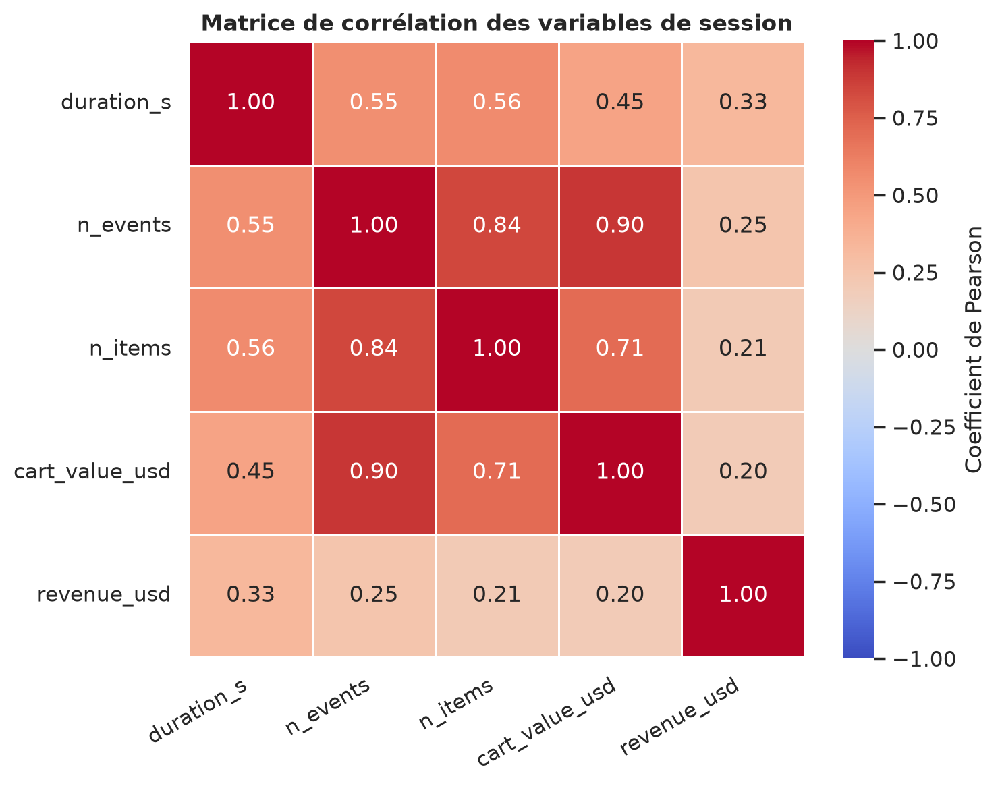
sns.heatmap, palette divergente. Source : notebook, section 10.5.Corrélations. Le nombre d’événements et la valeur du panier sont très liés (0,90), en partie mécaniquement : 92,6 % des événements sont des ajouts au panier. La durée et le nombre d’événements ne sont corrélés qu’à 0,55 en Pearson mais à 0,71 en Spearman : la relation est croissante mais non linéaire. Surtout, le chiffre d’affaires est faiblement corrélé à tout le reste (0,20 à 0,33) : une session longue et chargée ne garantit pas un achat, ce qui rejoint le constat de l’entonnoir.
L’application Streamlit rassemble toutes les analyses sur une page : une barre latérale de filtres, un bandeau de six indicateurs toujours visible et six onglets qui reprennent les quatre questions directrices. Elle est en ligne à l’adresse https://audience-lab.streamlit.app.
st.sidebar) et l’export CSV ; en haut, les six st.metric avec leur variation et leur petite courbe ; en dessous, l’onglet Synthèse et ses constats rédigés automatiquement à partir des données filtrées.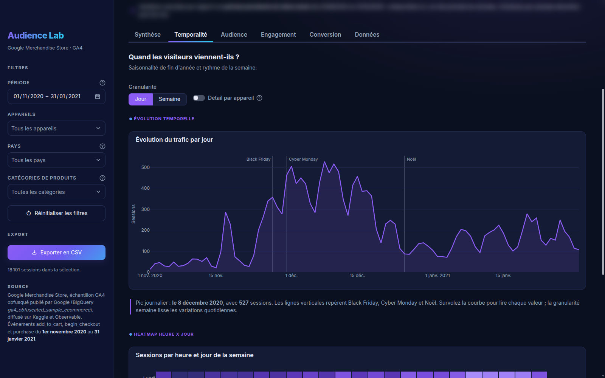
px.line (jour ou semaine, détail par appareil) avec repères calendaires ; la heatmap heure × jour suit dans l’onglet.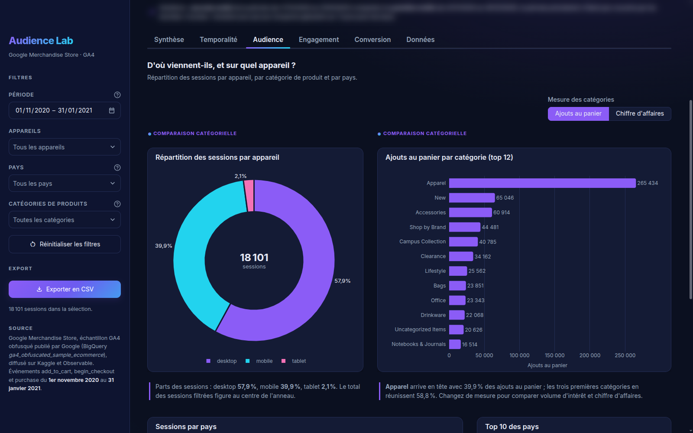
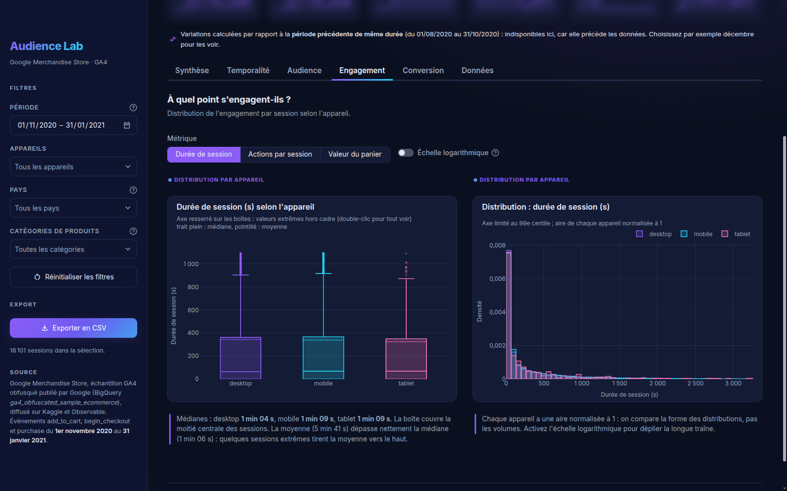
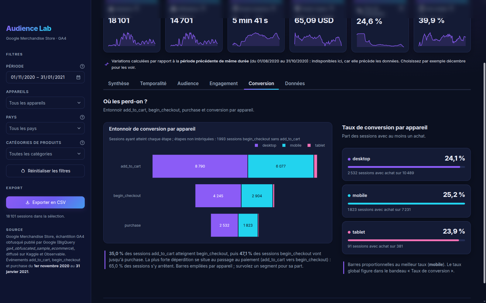
| Exigence du sujet | Mise en œuvre dans app.py |
|---|---|
Filtrage dynamique (st.sidebar) | période (plage de dates bornée aux données), appareils, pays (classés par fréquence), catégories ; bouton « Réinitialiser les filtres » |
Métriques clés (st.metric) | sessions, utilisateurs, durée moyenne, panier moyen, taux de conversion, part mobile ; variation et petite courbe quotidienne |
Graphiques Plotly Express (st.plotly_chart) | px.line, px.imshow, px.pie, px.bar, px.choropleth, px.box, px.histogram, px.funnel ; survol en valeurs réelles, export PNG |
Export CSV (st.download_button) | sessions filtrées, toutes colonnes, encodage UTF-8 avec BOM (lisible par Excel) ; aussi proposé dans l’onglet Données |
Un thème clair par défaut et un thème sombre, adapté à la projection, au choix par une bascule. Le CSS et chaque figure Plotly (fond, texte, palette) suivent le thème ; les couleurs des appareils restent identiques d’un graphique à l’autre.
Chaque carte compare la sélection à la période précédente de même durée. Si celle-ci sort des données, ce qui est le cas de la vue par défaut, l’application compare la seconde moitié de la période à la première et l’annonce en clair ; un seul jour sélectionné n’affiche pas de variation.
Typographie française (espaces insécables, virgule décimale), valeurs de données en anglais, légende chiffrée sous chaque graphique, message « Aucune donnée pour ces filtres » au lieu d’une erreur. Une page « Données » montre l’aperçu des sessions filtrées.
Données en Parquet, chargement et filtrage mis en cache (st.cache_data), onglets calculés seulement à l’ouverture : de 0,1 à 0,4 s par interaction en local. 99 tests automatisés couvrent données, indicateurs, graphiques et application.
Les constats convergent : l’audience se joue sur quelques semaines de fin d’année et en semaine, elle se comporte de la même façon quel que soit l’appareil, et la boutique perd l’essentiel de ses acheteurs potentiels entre le panier et le paiement. Six recommandations en découlent, de la plus à la moins prioritaire.
Ces 26 jours (28 % de la période) concentrent 9 744 sessions, soit 53,8 % du trafic. Les campagnes doivent être lancées avant le Black Friday, les stocks des best-sellers sécurisés pour début décembre et les dates limites de livraison mises en avant, puisque le pic coïncide avec les commandes de Noël et non avec le Black Friday lui-même.
Seules 35,0 % des sessions avec ajout au panier commencent un paiement, alors que 47,1 % des paiements commencés aboutissent. Les leviers relèvent du panier : frais et délais de livraison affichés dès le panier, relance des paniers abandonnés (le panier est souvent constitué puis payé plus tard), bouton de paiement express. À suivre avec le taux conditionnel add_to_cart vers begin_checkout comme indicateur principal.
Mardi et mercredi sont les jours les plus actifs, le week-end ne pèse que 20,0 % des sessions. Les envois de courriels, mises en avant et lancements de produits gagnent à être planifiés en début de semaine. L’heure, peu discriminante et de fuseau incertain, ne justifie pas d’optimisation fine à ce stade.
Le mobile convertit au moins aussi bien que le desktop (25,2 % contre 24,1 %) et pèse 40,2 % du chiffre d’affaires. Aucun écart de comportement ne justifie un chantier mobile spécifique ; l’enjeu est de maintenir la parité, en testant chaque évolution du tunnel d’achat sur les deux supports.
Apparel reste le pilier (54,3 % du chiffre d’affaires) et doit être protégé en stock. Bags transforme mieux ses ajouts au panier (2,81 achats pour 100 contre 1,83) : il mérite davantage de visibilité. Notebooks & Journals, avec 16 514 ajouts pour 36 achats, appelle un audit (prix, disponibilité, fiche produit, éventuel défaut de suivi).
Hors États-Unis (44,2 % des sessions), l’Inde (9,2 %) et le Canada (7,8 %) convertissent au même niveau (24,9 % et 25,4 %). Une offre localisée (affichage des prix, conditions de livraison) y aurait un rendement comparable à celui du marché principal.
| Indicateur | Valeur de référence | Pourquoi le suivre |
|---|---|---|
Passage add_to_cart vers begin_checkout | 35,0 % | mesure directe de la recommandation 2 |
Passage begin_checkout vers purchase | 47,1 % | santé du tunnel de paiement |
| Taux de conversion des sessions | 24,56 % | indicateur global, déjà dans le bandeau |
| Panier moyen (sessions avec achat) | 65,09 USD | valeur unitaire des commandes |
| Écart de conversion mobile et desktop | +1,1 point | alerte si la parité se dégrade |
Ces valeurs de référence portent sur la période complète. Le tableau de bord permet de les recalculer sur n’importe quelle période, appareil, pays ou catégorie, et d’en suivre la variation.
ga_session_id seul n’est pas un identifiant de session.| Limite | Constat chiffré | Conséquence pour l’analyse |
|---|---|---|
| Fuseau horaire non documenté | La source ne précise pas le fuseau des horodatages, probablement celui de la propriété Google Analytics (États-Unis). Le profil horaire est anormalement plat : 681 à 789 sessions selon l’heure. | Analyses horaires lues comme tendances relatives ; recommandations fondées sur le jour. |
| Échantillon obfusqué | Google anonymise ce jeu public : 6 155 sessions (34,0 %) contiennent exactement 12 articles distincts et les paniers de 191 et 382 USD sont surreprésentés (panier médian de 382 USD sur chaque appareil). | Niveaux absolus de panier à prendre avec prudence ; comparaisons relatives conservées. |
| Sessions à durée nulle | 5 922 sessions (32,7 %) n’ont qu’un horodatage : leur durée réelle est inconnue. | Durée moyenne et médiane sous-estimées ; ces sessions sont exclues des seules figures en échelle log. |
| Valeur ajoutée au panier et dépense | 938,63 USD ajoutés au panier par session contre 15,99 USD de chiffre d’affaires ; un article ajouté plusieurs fois compte plusieurs fois. | Indicateur d’intérêt, jamais présenté comme une dépense. |
| Collecte incomplète en début de période | Avant le 16 novembre, seuls les achats sont enregistrés (600 sessions, 99,8 % avec achat, 13,3 % du chiffre d’affaires) ; le pic des 17 et 18 novembre (287 et 229 sessions) suit immédiatement le démarrage de la collecte des ajouts au panier ; begin_checkout n’apparaît que le 23 novembre. 953 des 1 006 achats sans début de paiement sont antérieurs à cette date. | Conversion globale nettement surestimée ; entonnoir stable (voir ci-dessous). |
| Événements e-commerce seulement | Pas de pages vues ni de source de trafic : une session est ici une visite comportant au moins un ajout au panier, un paiement ou un achat. | Les visiteurs qui ne font que regarder sont invisibles ; pas d’analyse d’acquisition possible. |
En limitant l’analyse aux 16 421 sessions démarrées à partir du 25 novembre, date à partir de laquelle les trois types d’événements sont collectés en continu (ajouts au panier absents du 21 au 24 novembre), la conversion tombe à 20,3 % contre 24,6 % : la conversion globale est nettement surestimée. Les taux conditionnels restent du même ordre : 36,3 % des sessions avec panier commencent un paiement (35,0 % sur la période complète) et 47,2 % des paiements aboutissent (47,1 %), sans aucun achat sans begin_checkout. La conclusion principale, une perte concentrée entre panier et paiement, ne dépend donc pas de ce défaut de collecte. Calcul reproduit dans le notebook (section 10.7).
requirements.txt.users.csv pour une analyse de cohortes et de valeur vie client ; ajouter un raccourci « à partir du 25 novembre » pour neutraliser le défaut de collecte ; confirmer le fuseau horaire auprès de la source ; enrichir les données avec les pages vues et les sources de trafic pour relier l’audience à l’acquisition.Prérequis : Python 3.12 et Git. Les données brutes et traitées sont versionnées : l’application démarre sans étape préalable.
# 1. Récupérer le projet et créer l'environnement git clone https://github.com/Abdazz/audience-lab.git cd audience-lab python3 -m venv .venv source .venv/bin/activate pip install -r requirements-dev.txt # requirements.txt suffit pour l'application seule # 2. Lancer le tableau de bord (http://localhost:8501) streamlit run app.py # 3. Facultatif : retélécharger les données brutes et réexécuter le notebook python scripts/telecharger_donnees.py jupyter nbconvert --to notebook --execute --inplace notebooks/01_preparation_donnees.ipynb # 4. Lancer les tests, puis régénérer ce rapport (Chromium et pdftotext requis) pytest -q scripts/generer_pdf.sh rapport/rapport_analyse.html rapport/rapport_analyse.pdf
audience-lab/ ├── app.py # point d'entrée Streamlit ├── lancer.sh, lancer.bat # lancement en une commande (Linux, Windows) ├── audience/ # données, KPI, constats, graphiques, thèmes │ └── donnees.py, kpis.py, constats.py, graphiques.py, theme.py ├── data/ │ ├── raw/ # events.csv, items.csv, users.csv (source) │ └── processed/ # events_clean.parquet, sessions.parquet ├── notebooks/01_preparation_donnees.ipynb ├── rapport/ # ce rapport (HTML, CSS, PDF) et figures/ ├── scripts/ # téléchargement des données, génération du PDF ├── tests/ # 99 tests pytest ├── docs/captures/ # captures d'écran de l'application ├── .streamlit/config.toml ├── README.md # présentation, captures, liens, exécution ├── requirements.txt # versions exactes └── requirements-dev.txt # + Jupyter, pytest
| Exigence | Où la trouver |
|---|---|
| 1.1 Variables temporelle, numériques, catégorielles | Rapport 2.3 ; notebook, sections 1 et 6 |
| 2.1.1 Inspection, valeurs manquantes et aberrantes | Rapport 3 ; notebook, sections 1, 2, 3 et 8 |
2.1.2 Conversion en datetime, indexation temporelle | Notebook, section 4 (pd.to_datetime, set_index, resample) |
| 2.1.3 Variables agrégées (heure, jour, mois) | Notebook, sections 6 et 7 |
| 2.2 KPI : volume, durée ou valeur moyenne, répartition | Rapport 4 ; notebook, section 9 ; bandeau st.metric |
| 2.3.1 Évolution temporelle avec filtres | Rapport 5.1 ; onglet Temporalité (px.line) |
| 2.3.2 Comparaison catégorielle (barres ou camembert) | Rapport 5.2 ; onglet Audience (px.bar, px.pie) |
| 2.3.3 Distribution par appareil (boxplot ou densité) | Rapport 5.3 ; onglet Engagement (px.box, px.histogram) |
| 2.3.4 Heatmap heures × jours | Rapport 5.4 ; onglet Temporalité (px.imshow) |
2.4 st.sidebar, st.metric, st.plotly_chart, st.download_button | Rapport 6 ; app.py, sections 4 à 6 |
| 3.1 Code source propre et commenté, notebook | app.py, audience/, notebooks/ ; dépôt GitHub |
| 3.2 Rapport d’analyse | Présent document (rapport/rapport_analyse.pdf) |
| 3.3 Démonstration orale | Application en ligne, présentée en direct lors de la soutenance |
bigquery-public-data.ga4_obfuscated_sample_ecommerce.@observablehq/google-merchandise-sales-data ; reprise Kaggle mexwell/google-merchandise-sales-data.